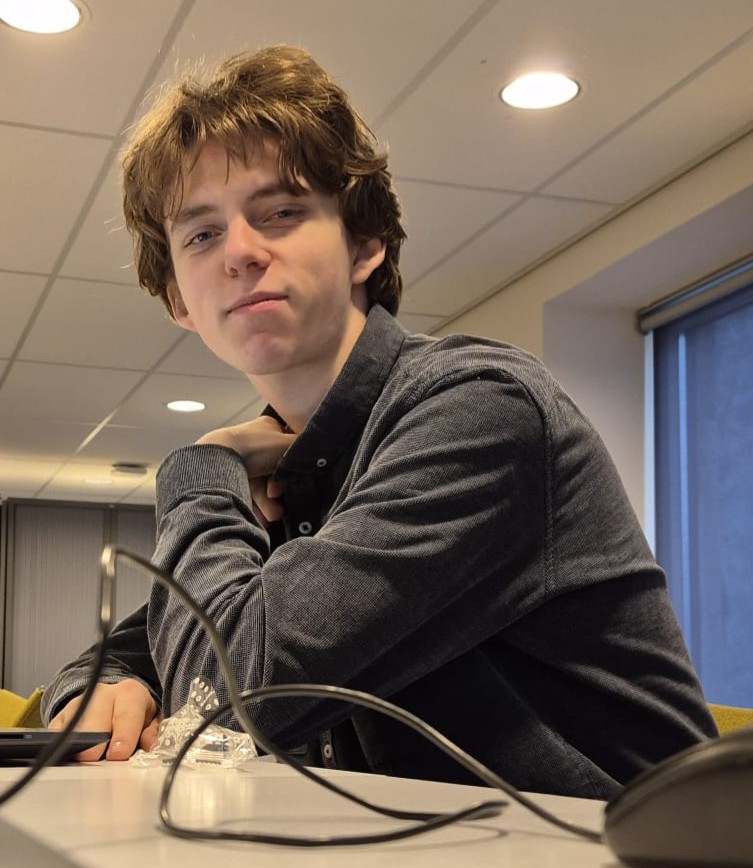
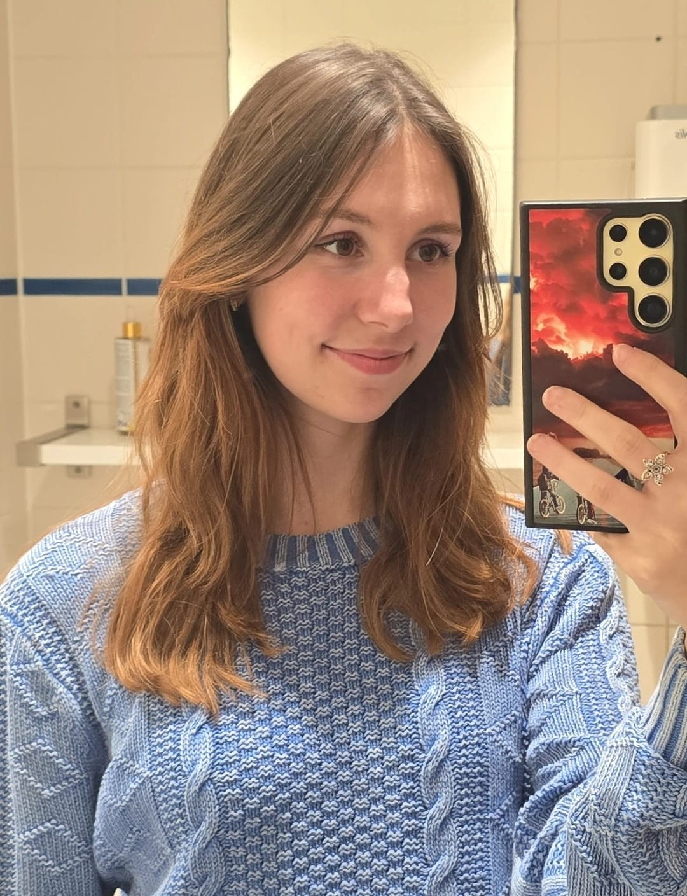

s.v. ATHENA


Bestuur
Het bestuur vormt een essentieel onderdeel van ieder goed functionerende studievereniging.
Het bestuur van studievereniging Athena bestaat uit 4 studenten van een van de aangesloten opleidingen die samen de rollen van voorzitter, vicevoorzitter, secretaris en penningmeester vervullen.
Lees verder om te ontdekken wie het huidige bestuur vormt en wat zij allemaal doen.

“Ik ben 4e jaars student op de Engelse lerarenopleiding en de voorzitter van de studievereniging Athena.”
"Dit houd in dat ik onder anderen het gezicht ben van de vereniging.
Daarnaast ontwerp, en leid ik alle bestuurs- en algemene ledenvergaderingen.
Als laatste onderneem ik al het contact met opleidingsmanagers en team coördinatoren van de lerarenopleidingen."
"Mijn doel is om een hechte en persoonlijke band te creëren binnen studievereniging Athena."
Vice-voorzitter
Mees Sinaasappel

"Ik ben 1e jaars student op de opleiding tot leraar economie en de vice-voorzitter van s.v. Athena."
"Als vice-voorzitter zal ik de kwaliteit van de door bestuur geschreven verslagen en dergelijke controleren
en als kameleon in te vallen waar nodig."
"Mijn doel is om er voor te zorgen dat zoveel mogelijk mensen hier een plek hebben om stoom af te blazen na een lange dag gevuld met colleges."
Secretaris
Larinka de Jong

“Hoi, ik ben Larinka, 23 jaar. 2e jaars student op de Engels leraren opleiding en de secretaris van s.v. Athena!”
"Als je een post op de socials voorbij ziet komen, ben ik daar verantwoordelijk voor.
Daarnaast zorg ik eronder andere ook voor dat er elke maand een mooie nieuwsbrief verstuurd wordt,
zodat ieder lid op de hoogte is van de afgelopen maand, en wat jullie kunnen verwachten in de volgende maand!"
“Mijn doel binnen Athena is om studerende jongeren zo veel mogelijk te laten zien hoe leuk studeren echt kan zijn,
en daar een handje bij te helpen.”
Penningmeester
Alican Fırat

"Ik ben 3e jaars student aan de lerarenopleiding scheikunde en de penningmeester van Athena."
"Als penningmeester houd ik mij bezig met alle financiële zaken van de vereniging."
“Mijn doel is om de leden te inspireren en motiveren om mee te denken over de toekomst en keuzes van onze studievereniging"